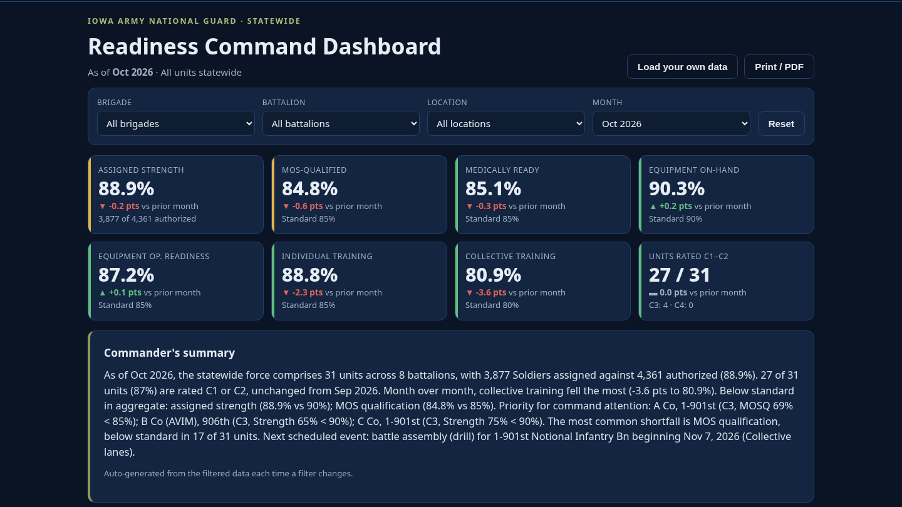
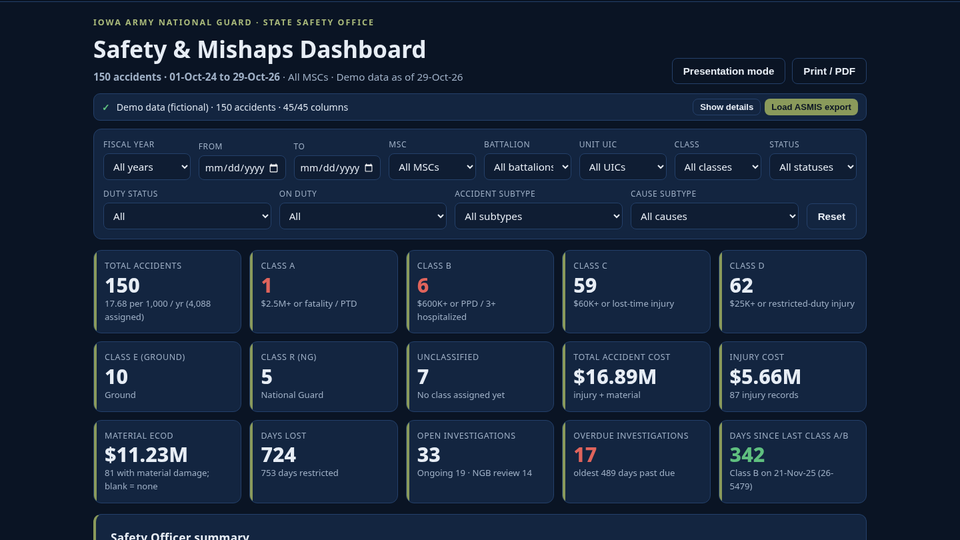
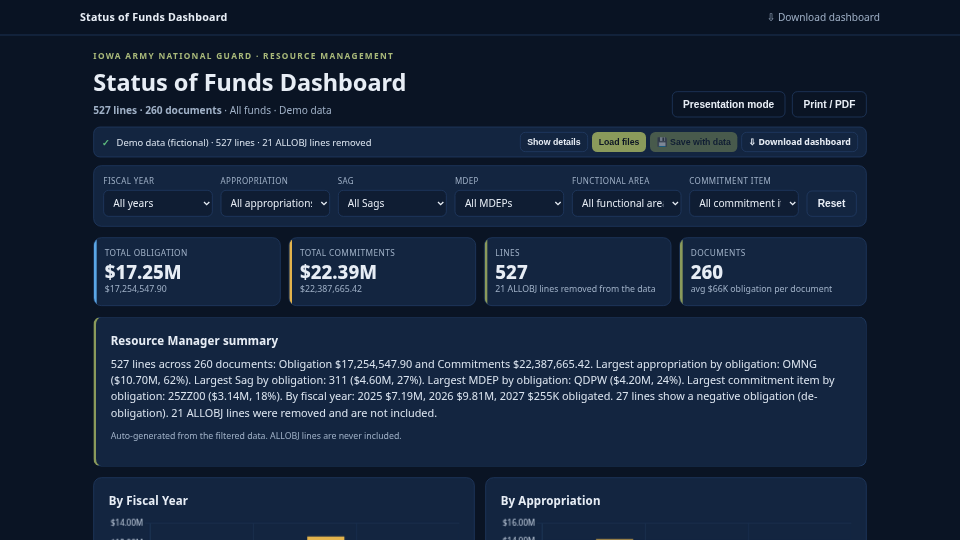
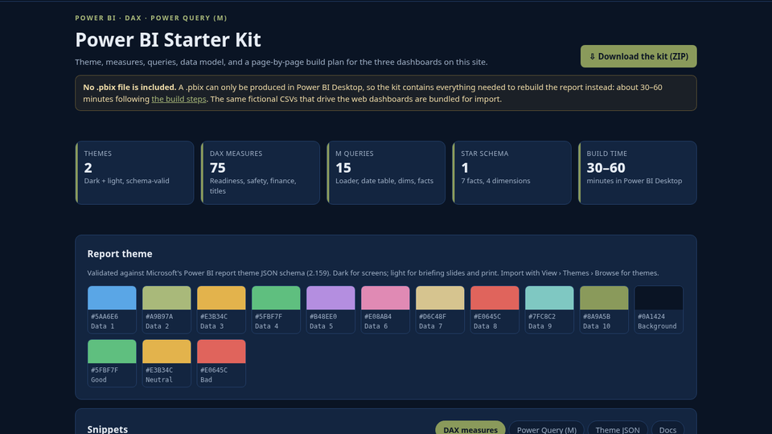

Readiness Command Dashboard
Personnel, medical, equipment, and training readiness for 31 company-level units over 18 months, with filters, trends, a unit-attention ranking, a state map, and an auto-written commander's summary.
LiveOpen
Data analytics and automation portfolio.
Interactive dashboards and tools. Each runs in the browser and works offline.

Personnel, medical, equipment, and training readiness for 31 company-level units over 18 months, with filters, trends, a unit-attention ranking, a state map, and an auto-written commander's summary.

24 months of mishaps and near misses: rate per 1,000 personnel, Class A–D breakdowns, year-over-year trend, seasonal heat map, unit ranking normalized by strength, risk hotspots, and a safety officer summary.

FY26 and FY27-to-date execution by appropriation and program: funding to disbursement funnel, S-curve against the spend plan, burn rate, end-of-year projection, variance table, use-or-lose flags, TDY, and unfunded requirements.

Report themes, a DAX measures library, Power Query (M) scripts, a star-schema model, and a page-by-page build plan that recreates these dashboards in Power BI.
Drop in a spreadsheet and get a briefing-ready report: charts, tables, and a narrative summary, generated in the browser in seconds.
Compares two data sources against a system of record and flags mismatches, duplicates, and missing records with a fix list.
Tracks AI/SI pilot projects from idea to production: status, risk, governance checkpoints, and measured mission impact.
Replace this box with a 3–5 sentence bio: current role, years of experience, tools you use most, and what you want to do for the organization. To edit, change the "About me" section in index.html.
Cole McClintock · clintonmcclintock@gmail.com
index.html.